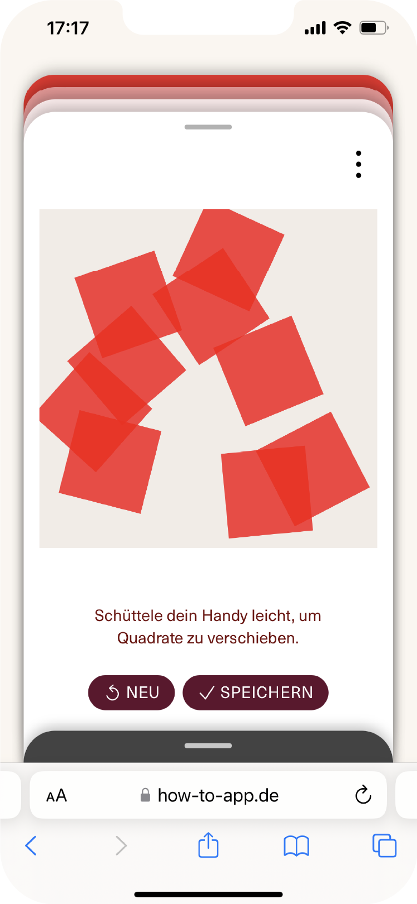

zufall

Das Spiel Zufall fragt nach dem Zusammenwirken von steuerbaren und nicht steuerbaren Prozessen in einem Kunstwerk. Wie lassen sich 9 rote Quadrate auf einer Fläche verteilen? Welche Auswirkung hat eine Bewegung? Was kann entstehen, wenn wir unsere Pläne und Vorstellungen über Bord werfen und einfach nur schauen, was passiert?
werk
9 vom Meereswind zerstreute Quadrate heißt dieses Gemälde von Vera Molnar und sie beschreibt damit, wie es entstanden ist.
»Als ich den großen Raum, den ich als Atelier nutzte, betrat, sah ich schon von Weitem, dass die neun aus rotem Papier ausgeschnittenen Quadrate auf weißem Grund ihre Position verändert hatten. Durch die weit geöffneten Türen zum offenen Meer trat der Störenfried: der Westwind. Er ist schon ein geschickter Schöpfer, der Zufall. Wofür soll ich mich als Künstlerin entscheiden? Für meine kalkulierte Komposition oder die der sanften Meeresbrise? Bescheiden gebe ich auf und werfe meine Gewissheiten über Bord.«
Die roten Quadrate scheinen von links oben nach rechts unten über die vier weißen Leinwände zu purzeln, als hätte die Malerin sie mit einem Wurf aus der Hand geschüttelt. Ist diese Anordnung das Ergebnis eines glücklichen Zufalls – ein so genannter gelungener Wurf, wie er beim Würfelspiel nur ganz selten gelingt? Im übertragenen Sinne bedeutet der große Wurf eine künstlerische Meisterleistung. Worin unterscheidet sich dieser Wurf, diese Anordnung roter Quadrate auf weißem Grund, von der endlosen Zahl anderer Kombinationsmöglichkeiten? Fasziniert von der Idee des Zufalls, begibt sich Vera Molnar zu Beginn ihres künstlerischen Schaffens auf die Suche nach Antworten:
»Warum nicht, den Zufall als Gesetz zur Zusammenstellung von willkürlich gewählten Formen und Farben nutzen, sage ich mir? Angeregt von dieser Idee begann ich, Bilder zu machen, denen ich die Zahlenkolonnen des Telefonverzeichnisses zugrunde legte (…). Diese Herangehensweise befriedigte mich allerdings nur kurz. Wenn jede zufällige Zusammenstellung von Formen und Farben ein Kunstwerk ist, dann ist nichts ein Kunstwerk; wenn alles schön ist, ist nichts schön. Es ist notwendig zu wählen und es liegt schließlich an mir, der Malerin, das zu tun.«
Vera Molnar, die von sich selbst sagt, sie sei schon immer von der Schönheit elementarer Formen und deren systematischer Ordnung fasziniert gewesen, setzt den Zufall ganz bewusst ein. In diesem Fall tritt der Zufall als Windstoß auf, in vielen anderen Werken nutzt sie den Computer oder tatsächlich den Würfel als Zufallsgenerator. Jedoch nicht jeder Zufall, ganz gleich ob durch den Wind oder durch eine Programmierung erzeugt, schafft Kunst. Allein die Malerin entscheidet darüber, welche Komposition Bestand hat, sie sagt:
»Der eigentliche Stolperstein der bildenden Kunst ist die Schwierigkeit, aus der Unermesslichkeit möglicher Gegenüberstellungen von Formen und Farben diejenigen herauszufiltern, die in die Kategorie ›Kunst‹ fallen.«
Die roten Quadrate scheinen von links oben nach rechts unten über die vier weißen Leinwände zu purzeln, als hätte die Malerin sie mit einem Wurf aus der Hand geschüttelt. Ist diese Anordnung das Ergebnis eines glücklichen Zufalls – ein so genannter gelungener Wurf, wie er beim Würfelspiel nur ganz selten gelingt? Im übertragenen Sinne bedeutet der große Wurf eine künstlerische Meisterleistung. Worin unterscheidet sich dieser Wurf, diese Anordnung roter Quadrate auf weißem Grund, von der endlosen Zahl anderer Kombinationsmöglichkeiten? Fasziniert von der Idee des Zufalls, begibt sich Vera Molnar zu Beginn ihres künstlerischen Schaffens auf die Suche nach Antworten:
»Warum nicht, den Zufall als Gesetz zur Zusammenstellung von willkürlich gewählten Formen und Farben nutzen, sage ich mir? Angeregt von dieser Idee begann ich, Bilder zu machen, denen ich die Zahlenkolonnen des Telefonverzeichnisses zugrunde legte (…). Diese Herangehensweise befriedigte mich allerdings nur kurz. Wenn jede zufällige Zusammenstellung von Formen und Farben ein Kunstwerk ist, dann ist nichts ein Kunstwerk; wenn alles schön ist, ist nichts schön. Es ist notwendig zu wählen und es liegt schließlich an mir, der Malerin, das zu tun.«
Vera Molnar, die von sich selbst sagt, sie sei schon immer von der Schönheit elementarer Formen und deren systematischer Ordnung fasziniert gewesen, setzt den Zufall ganz bewusst ein. In diesem Fall tritt der Zufall als Windstoß auf, in vielen anderen Werken nutzt sie den Computer oder tatsächlich den Würfel als Zufallsgenerator. Jedoch nicht jeder Zufall, ganz gleich ob durch den Wind oder durch eine Programmierung erzeugt, schafft Kunst. Allein die Malerin entscheidet darüber, welche Komposition Bestand hat, sie sagt:
»Der eigentliche Stolperstein der bildenden Kunst ist die Schwierigkeit, aus der Unermesslichkeit möglicher Gegenüberstellungen von Formen und Farben diejenigen herauszufiltern, die in die Kategorie ›Kunst‹ fallen.«
VERWENDETE UND ZITIERTE LITERATUR
Interview de Vera et de François Molnar par Sigurd Rompza. Paris 1992. In: Jo Enzweiler, Sigurd Rompza (Hg.): Kunst Konkret. Zeitschrift für Kunst, Architektur und Gestaltung. Heft 1, Saarbrücken 1995, S. 23-27
Vera Molnar. Un cheveu gris sur un tricot gris (à Marc Weiser). Le Havre 1999 Quelle
Vera Molnar. Regards sur mes images. o.O. 1984 Quelle

galerie